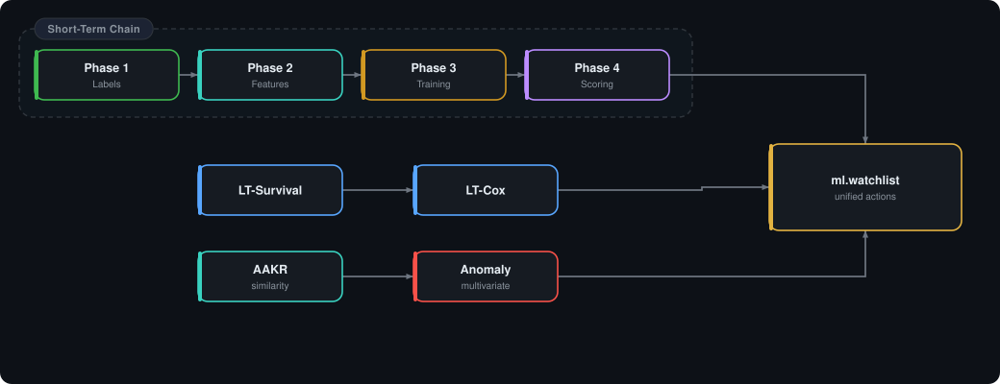

OneGrid ML Pipeline
Fabric notebook reference for the Riverton solution: one-time data archaeology, Phase 1-4 short-term prediction, and parallel long-term survival plus legacy APM analytics tracks.
Pipeline Overview
The OneGrid stack separates conformed source data in gold.* from notebook outputs in ml.*. The recurring short-term prediction path is Phase 1 → 4; survival, AAKR, and anomaly tracks run alongside it and converge in the shared watchlist.
Target Assets
Gold Tables
ML Tables
Features / 15-min Bin
RV2_U2_Boiler
High-volume boiler process tags and forced-outage history. Major consumer of Phase 1-4 short-term scoring.
RV3_U3_Steam_Turbine
Vibration, lube-oil, and thermal tags feed both short-term classifiers and long-term Cox risk ranking.
RV3_U3_Boiler_Feed_Pump_East
Motor current, flow, and vibration signatures are used by short-term, survival, AAKR, and anomaly tracks.
Phase 0 - Data Archaeology
| Notebook | Role | Checks / Outputs |
|---|---|---|
Phase0-Data-Archaeology | Diagnostic gate before modeling | Validates PI tag coverage, running indicators, GADS event alignment, and sensor density per asset. Produces a go / no-go verdict for Phase 1. |
Phase0b-Pipeline-Diagnostics | Root-cause investigation | Drills into blockers surfaced by Phase 0 such as missing tags, NULL timestamps, or missing running indicators so the data foundation can be repaired before training. |
These notebooks are used during scope validation and troubleshooting only. They are not scheduled as part of the daily or hourly production chain.
Phase 1-4 Short-Term Prediction Track
The recurring batch pipeline is a four-step dependency chain. Each notebook has a single clear contract: read curated inputs, write governed ml.* outputs, and hand off to the next phase.
| Phase | Notebook | Reads | Writes | Purpose |
|---|---|---|---|---|
| Phase 1 | Phase1-Label-Construction | gold.fact_gads_event + gold.dim_scope_asset | ml.labels | Builds binary stop labels at 4 h / 8 h / 24 h horizons from GADS forced-outage events using 15-minute bins. Planned events (PO, RS) are excluded. |
| Phase 2 | Phase2-Feature-Engineering | ml.labels + gold.fact_pi + gold.bridge_pi_tag_to_asset | ml.selected_tags + ml.training_shortterm | Selects the most informative PI tags, engineers per-tag rolling features, and assembles the 15-minute training matrix. |
| Phase 3 | Phase3-Predictive-Model | ml.training_shortterm | MLflow models (RandomForest, GradientBoosting) | Trains short-term prediction models for each horizon and logs them to MLflow for reproducible promotion and scoring. |
| Phase 4 | Phase4-Model-Scoring-Batch | MLflow models + Eventhouse real-time data | ml.predictions_shortterm + ml.drivers_shortterm | Loads models by params.horizon and params.n_features, scores the latest real-time feature state, and records both probability and top drivers. |
Per-tag feature derivations
| Suffix | Meaning |
|---|---|
__v | Current 15-minute value. |
__avg1h | Trailing 1-hour average. |
__delta1h | Change versus 1 hour earlier. |
__avg4h | Trailing 4-hour average. |
__delta4h | Change versus 4 hours earlier. |
__avg8h | Trailing 8-hour average. |
__delta8h | Change versus 8 hours earlier. |
__std1h | Trailing 1-hour standard deviation. |
Each selected PI tag expands into these eight derivations. With roughly forty retained signals across the three target assets, Phase2-Feature-Engineering emits about 320 engineered features per 15-minute bin.
Parallel Long-Term and legacy APM Tracks
Three additional notebook families operate independently of the short-term chain. They can be run in parallel because they read the same curated conformed data but do not depend on Phase 1-4 outputs unless explicitly noted below.
| Track | Notebook | Reads | Writes | Notes |
|---|---|---|---|---|
| Long-term survival | Phase-LongTerm-Survival | gold.fact_pi + gold.fact_gads_event | ml.training_longterm | Builds the daily survival training panel for remaining-useful-life style modeling. |
| Long-term survival | Phase-LongTerm-Cox | ml.training_longterm + gold.bridge_pi_tag_to_asset | ml.predictions_longterm + ml.drivers_longterm + ml.degradation_longterm + ml.watchlist | Fits / scores a Cox Proportional Hazards model to estimate long-term remaining useful life and fleet ranking. |
| Legacy APM replacement | Similarity-Anomaly | Eventhouse + gold.bridge_pi_tag_to_asset | ml.aakr_memory + ml.aakr_metadata + ml.aakr_scores + ml.aakr_episodes + ml.aakr_health + ml.watchlist | AAKR-based replacement for legacy APM-style similarity modeling and asset health scoring. |
| Legacy APM analytics | Multivariate-Anomaly-Detection | Eventhouse + gold.bridge_pi_tag_to_asset | ml.anomaly_advisories + ml.anomaly_baselines + ml.anomaly_multivariate + ml.watchlist | Produces baseline-aware anomaly advisories and multivariate drift signals that complement AAKR. |
Run Order & Dependencies

Schema: gold vs ml
| Layer | Count | Role | Examples |
|---|---|---|---|
gold.* | 11 tables | Conformed facts, dimensions, and bridges used as authoritative modeling inputs. | gold.fact_pi, gold.fact_gads_event, gold.fact_cm_measurement, gold.bridge_pi_tag_to_asset, gold.dim_equipment, gold.dim_scope_asset |
ml.* | 18 tables | Notebook outputs for labels, training sets, predictions, driver explanations, health scores, and watchlist records. | ml.labels, ml.training_shortterm, ml.predictions_shortterm, ml.watchlist |
Key gold tables
| Table | Purpose |
|---|---|
gold.fact_pi | Primary conformed PI fact table at modeling grain; approximately 135M rows. |
gold.fact_gads_event | Forced outage / derate history used to build labels and long-term event observations. |
gold.fact_cm_measurement | Condition-monitoring measurements used for asset context and later enrichment. |
gold.bridge_pi_tag_to_asset | Canonical mapping from PI tag names to target assets. |
gold.dim_equipment | Equipment metadata and engineering descriptors. |
gold.dim_scope_asset | Explicit in-scope asset list for labeling and model targeting. |
Most referenced ML outputs
| Table | Role |
|---|---|
ml.labels | Binary 4 h / 8 h / 24 h stop labels from GADS forced outage events. |
ml.training_shortterm | Feature-engineered 15-minute training matrix for short-term models. |
ml.predictions_shortterm | Batch-scored short-horizon probabilities by asset and model horizon. |
ml.watchlist | Unified action table consumed by reporting and alerting across model families. |
Unified Watchlist
All three model families - Cox, AAKR, and anomaly detection - write standardized rows to ml.watchlist. This gives Power BI, downstream alerting, and operator triage one schema to consume regardless of which notebook produced the advisory.
model_name, scoring_date, asset_id, feature, tag_name, descriptor, engineering_units,
current_value, baseline_mean, baseline_std, normal_range_low, normal_range_high,
risk_contribution, trend_direction, trend_slope_per_day, recommended_action,
recommendation_text, watch_horizon_days, model_run_timestamp, notebook_run_id- Cox: long-horizon fleet-risk rows for maintenance planning.
- AAKR: residual-driven health and episode rows for legacy APM-style monitoring.
- Anomaly: advisory rows describing baseline breaks or multivariate drift.